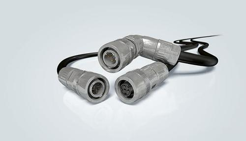

生活常用的连接器都有哪些
2019-10-25
连接器端子有哪些优点
连接器端子的优点有哪些?连接器端子在我们的一些电子产品中使用频率还是蛮高的，下面联鑫泰小编为大家介绍下端子连接器有哪些优点。

1、改善生产过程 连接器端子简化电子产品的装配过程。也简化了批量生产过程;SCSI连接器。
2、易于维修 如果某电子元部件失效，装有连接器时可以快速更换失效元部件;
3、便于升级 随着技术进步，装有连接器时可以更新元部件，用新的、更完善的元部件代替旧的;
4、提高设计的灵活性 使用接线端子连接器使工程师们在设计和集成新产品时，以及用元部件组成系统时，有更大的灵活性
上一篇：没有了